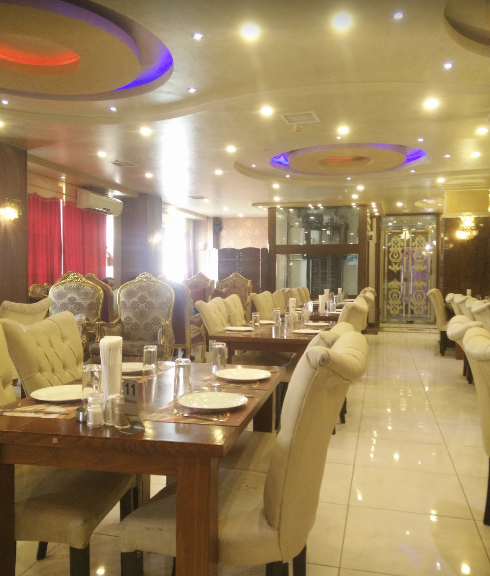

The city of Tulkarem is located in the middle of the eastern part of the coastal plain, 15 km east the Mediterranean sea, and 88km from Jerusalem. The heights of the hills in the city are between 55 – 120 meters above sea level. Tulkarm was settled by the Canaanites in 3000 B.C. and tombs from early Canaanites have been discovered in the vicinity of the city. It later became a Roman post called Birat Soriqa. During the Islamic period, the original name was Tor Al Karm which means ‘The Mount of Vineyards.’ In the middle of the 17th century AD, the local inhabitants pronounced it ‘tul’ instead of ‘tor,’ and it has been known as Tulkarm until today. The population flourished in the city starting in the Roman period up until the present day because of its rich soil and the availability of water. The city also gained importance when the Ottomans made it the capital of the region. The Tulkarm Archaeological Museum, which is located in the center of the town, includes numerous artifacts from
The name “Tulkarem” means “the vineyard’s mountain”. Tulkarem is located in northwest of the West Bank; it is situated in the middle of a coastal plain. It is 15 km from the Mediterranean Sea. The Israeli cities Netentya and Haifa are to the west, and the Palestinian cities of Nablus and Jenin are to the east. Tulkarem has a population of 51,300 people, which includes 10,641 people who live in the refugee camp nearby. The name of the city means the “The vineyard’s mountain”.
Qalqilia is city located in the north-west of the West Bank close to what is called “green line”, a border line that was set out in 1949 after the armistice amongst the warring parties of Israel and Egypt, Jordan, Lebanon, and Syria. It is 16 kilometers from Tulkarem. The city is inhabited by about 41,739 people of which a majority are Palestinian refugees or their descendants.
The location of the city gives it a special importance where it because it is the meeting point for Palestinian cities of the north and south and west. The City’s history and its name goes back to the Canaanite era when it was called “Jiljilyya” meaning “the round stone”.
The city offers the only zoo in Palestine. The zoo was established in 1986, and it has an area of 35,000 square meters. It is located to the north of the city. The story of the zoo and its founder, Dr. Sami, is told in the book “The Zoo on the Road to Nablus” (2007) by Amelia Thomas. In addition, Qalqilia offers religious and archeological sites, such as the tomb of Prophet Elias. A whole village to the west to Qalqilia is named for Elias. In addition, there are Roman landmarks which are known as Roman pond.There are three ponds found in the center of Snerya village.
The city’s weather is mild with the average daily temperatures being 19C. During the summertime the temperatures may reach a maximum of 28C, and 10C in the wintertime. The city is known for its rain; this rain effects positively on summer and winter agricultural production which includes fruit production. Agricultural activities also include raising livestock, and beekeeping.

What To Do?Tulkarem is an exciting city to be in; each new street is surprisingly scenic and some of the architecture is very impressive. Although it is out of the way, it is definitely a city worth visiting. The Tulkarem museum, located in the centre, is home to a number of artefacts from the Roman period onward, and helps shed light on Tulkarem’s rich and varied history. |
Where To Eat? There are many excellent restaurants serving roasted chicken, delicious shawarma, fresh hummus and everything in between. |
Where To Stay? The best bet for accommodation is to head north to Jenin, east to Nablus or south to Ramallah |
|  |